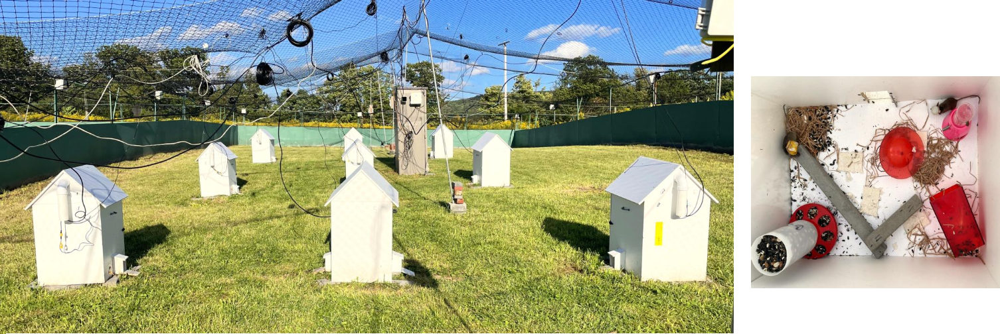

A hippocampal population code for rapid generalization
Pre-printCA1 population activity uses a disentangled code for location, time, and choice. CA3 and MEC inputs set spatial remapping, while local CA1 PV-interneurons drive representational drift.
Welcome to my personal webpage!
I'm an undergraduate student at Cornell University, Department of Neurobiology and Behavior (NBB).
I'm interested in computational neuroscience & cognitive neuroscience - learning and memory, speech encoding/decoding, and brain machine-interfaces (BMI)
I am interested in computational and cognitive neuroscience, especially how the brain builds structured internal representations that support learning, memory, communication, and flexible behavior. Broadly, I want to understand how neural systems allow us to learn from experience, organize knowledge across time, transform thought into speech and language, and use these representations to guide flexible behavior. In spatial navigation, I am interested in how the hippocampus and prefrontal cortex represent environments, routes, goals, and memories. In language, I am exploring how neural populations encode speech, meaning, and abstract structure to support the communication of complex ideas.
At Cornell, my work in Dr. Antonio Fernandez-Ruiz and Dr. Azahara Oliva’s lab (the people who first brought me into computational neuroscience!!! yay!!!) has focused on how hippocampal and cortical circuits support learning, memory, and spatial navigation across different timescales and environments. In addition to complex animal behavioral tasks and surgery skills, I have learned how to preprocess neural data, apply dimensionality reduction, analyze topology and neural manifolds, gain hands-on exposure to neural data logger hardware development, and, most importantly, problem solving skills and characteristics in being persistant.
More recently, I have also become interested in speech and language, with the great opportunity to explore these questions in Dr. Ziv Williams’s lab at Mass General Hospital and Harvard. I am studying neural encoding, decoding, and speech production, with a particular focus on how single neurons and neural populations represent phonetic, syntactic, and semantic information. I am especially interested in using GLMs, decoding models, representational geometry, and manifold analysis to explain how the brain represents linguistic structure and abstract concepts at both the single-cell and population levels.
CA1 population activity uses a disentangled code for location, time, and choice. CA3 and MEC inputs set spatial remapping, while local CA1 PV-interneurons drive representational drift.

We study male mice living in a semi-natural outdoor enclosure, recording hippocampal place-cell activity as they form, defend, and intrude into territory.

We develop polymer-based flexible thin-film probes to overcome the tissue-device mismatch of rigid silicon probes, enabling stable long-term single-neuron tracking.
A developing proposal on how pathological circuit changes may reshape drift, destabilize neural manifolds, and impair stable memory representations in disease.
A closed-loop BMI experiment testing whether hippocampal sequences function as prioritized experience replay - selectively reinforcing high-value trajectories in real time to accelerate learning in a probabilistic T-maze task (BioNB 3300 Neural-AI Final Project).
How do memories consolidate? As mice explore a maze that expands from a local to a global layout over 28 days, we track the same neurons across two brain regions. By observing these neural patterns reshape themselves, we see how new routes take hold and familiar paths stabilize into long-term memory.
This project investigates how hippocampal and prefrontal neural population activity reorganizes as a mouse learns a progressively expanding maze over 28 days. By combining GLM-based single-neuron encoding models with manifold learning and topological data analysis, it aims to reveal how fragile spatial representations become stable long-term memory structures across the CA1-PFC network.

Earlier work in Dr. Chenjian Li's lab at Peking University on Huntington's Disease using the CRISPR system.
Yuanyi Dai et al., Self-inactivating AAV-CRISPR at different ages enables sustained amelioration of Huntington's disease deficits in BAC226Q mice. Sci. Adv. 12, eaea8052 (2026).
If any project, proposal, or research direction here intrigues you, feel free to reach out. I'd be glad to talk about computational and cognitive neuroscience.